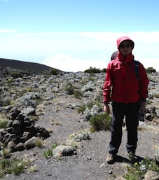

薛兆鑫 Tony Xue

I am a freshman at University of California, Davis
Contact：
The easiest way to reach me is through WeChat.
My WeChat ID is sitsiuyam.
E-mail: tonyxue _at_ tonyxue _dot_ asia
IRC: You can also find me as ToaNii in #linux-libre(English) and #ubuntu-cn(Chinese) on Freenode.
Education：
2012-2015 International Curriculum Centre, The High School Affiliated to Renmin Univ. of China
2009-2012 Junior High School, The High School Affiliated to Renmin Univ. of China
Computer related skills：
 Blender 3D
Blender 3D
 Sony Vegas Pro
Sony Vegas Pro
 Linux system and bash programming
Linux system and bash programming
 Windows server administration
Windows server administration
DNS system strategies
C++ Programming
Other Experience
Domain investments
Copyright research
Links:
My mate James Liu. He's generally a genius on computers and he's now a CTO at a startup.
My GitHub
My Blog
2015 Handmade in Beijing
No copyright, No license.